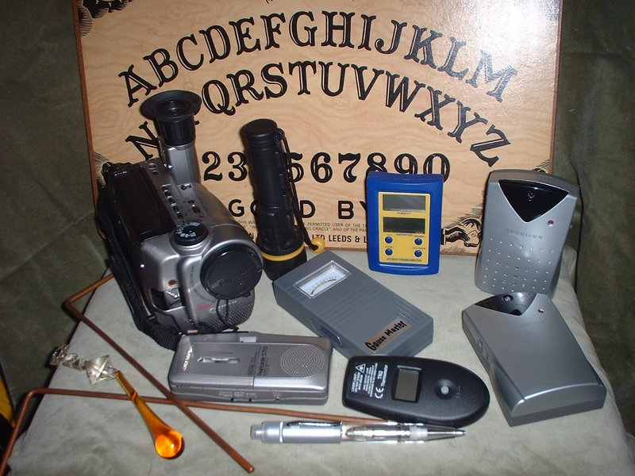

EVP/Paranormal info
Posted on August 24, 2013 at 9:00 PM

What we do, how we do it!
When you tell people on of your hobbies is chasing ghosts, they either look at you like "COOOOOOOL" or give you a look like you just told them this is the first day of freedom from your stay at the insane asylum. So why do it then? Simply put its fun. The first time you get an EVP you are hooked. SOMTHING is there.However this blog will be done with a skeptical eye. I'm going to throw up alot of stuff and its up to YOU to interpret it.
Yes there are skeptics, in fact the first thing you should be as an investigator is skeptical. Every floor creak, every bump - isn't a ghost. What's funny is most of the hardcore skeptics have never once even tried it. Even if they did a ghost could jump down in front of them, spin them around, and give them a wedgie and they would say "There's a perfectly scientific explanation for this". Maybe its just.........

So what is an EVP? The acronymn means "Electronic Voice Phenomenon" and wikipedia can do a better job than me HERE. What skeptics don't seen to get is the reason you don't "hear" most EVP's are because they are so low and quiet you don't notice them live. Your typical voice recorder can pick up noises your ears (especially old ears) miss. Also EVP's sound nothing like regular speech. The best desription I can give you is they sound like whispering underwater, sometimes straining. These are what you hear with a typical voice recorder. Then of course we have ITC or "Instrumental trans Communications" apps like Echovox.
Echovox
Echovox, very simply, is a phoneme generator. Basically it spits out random sounds, you can hear that in the sound files I post. Don't think that every sound you hear is a ghost trying to come thru, IT'S NOT. What you are trying to pick out is words. You can do all sorts of things with the newest version, from controlling the echo to reverb. 4 differant sound banks too. What you really and I mean REALLY have to watch out for is audio pareidolia. Click on the skeptical link for an explanation. Look at the video below to see Echovox in action. Check out the other videos too. My rebuttal to the "audio pareidolia" crowd is actually pretty simple. If that was to explain for all the responses from Echovox, other ITC apps and ghost boxes....then why have I yet to hear my first name clearly? or the name of the town I live in? I got the NEIGHBORING town quite clearly once. Trust me I've spent HOURS trying. Any ghost hunter will tell you that you don't hit home runs every time out. Sometimes its dead, like our last investigation at the Sun Inn. If the skeptics were right we'd be hearing all kinds of things all the time. Also how are standard EVP's explained? You hear a whispering voice saying "help me", how do you explain that? Again try it yourself before "debunking" anything.
So do I think Echovox works? You decide for yourself. I think it works, however I'm much more picky about what I call an EVP than most people. I have seen videos where people pick out every sound coming out of Echovox and claim its a word. Those type of people give the "audio pareidolia" crowd ammo to hurt the ghost hunting field. That being said of my top 10 EVPs probably 6 of them are from Echovox. Sometimes the sound just create a white noise that voices come thru on, sort of like how an SB-7 spirit box works. I myself use a cheap, EBAY hacked Motorola radio rather than an SB-7 but they work the same. Again you do searches on this and you get into a minefield. Please try it yourself and make your own judgements. Before believing any skeptic or believer remember you will find people who will argue until they are blue in the face that the earth is flat, the moon landing was faked, and Elvis is alive.
Spirit Boxes
These work by scanning radio frequencies quickly, like a 1/10 of a second on each station. Like Echovox you hear little snippets of words and sometimes get EVP's thru them. There is a whole industry around these boxes, from mild to wild. Again you can hack one yourself for cheap I will show you how in the equiptment section.The afterforementioned SB-7 is a type of spirit box.
Flashlights
This was one thing I always was very skeptical about. Basically you take a Mag light, the kind you turn off and on by twisting the lens cap, and turn it so its JUST off. Then set it on a table and ask questions. My skeptical brain tells me that any little vibration can set it off, and its not paranormal. Well on our last investigation with GK-2 Paranormal at the Sun Inn they did a flashlight session for almost an hour that blew me away. Instant responses, a very long coversation. Better and more convincing than I've ever seen. What's amazing is they took the same setup to the cellar and ..............nothing. No responses. I'm incorporating a flashlight from now on, its worth a try.
K2 meters, Mel Meters
Another thing I'm not sold on. They are detect Electromagnetic fields, or EMFs, which some feel ghosts are made of. Know what else emits EMF?? Everything! Cell phones, TV's, radios, everything. Those meters probably work best by telling you if you got EMF interferance and are best at disproving paranormal stuff rather than proving anything.
How to listen to EVP's
This is a short section. Use good, over the ear headphones. They can be very tough to pick out within back ground noise, using headphones help greatly.
Do we actually believe this stuff?
Well glad you asked. Again its fun for us. We really try not to make any judgements as to what is causing what we are hearing. Same with things like orbs. I'm not an orb fan, some paranormal groups live on them. I honestly feel 99.99% of them are dust and insects. I'm not the only one who feels this way. Dowsing rods? Well I remember my father telling me a long time ago when he was young they had to dig a well on his farm and they got the local dowser to help. How and why it works is way above my pay grade but in the right hands they do give you some neat findings. You can find a whole lot of equiptment to hunt ghosts, be careful alot of them succeed in only making your wallet (or purse) lighter. Also be careful of people who claim to be able to reach your dead relatives, that hand you feel on your backside isn't being fresh, its trying to get your money. Do a You Tube search on "spirit boxes" and you will find many videos by such a charlatain.